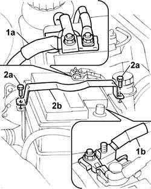
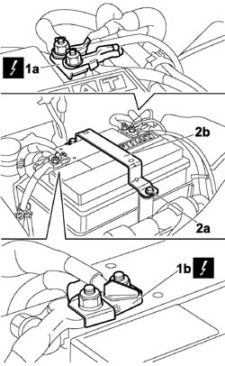

Procedures › 55 ELECTRICAL EQUIPMENT › 5530 CURRENT GENERATOR › 5530B battery and leads › 5530B10 battery - r+r 5530B10 battery - r+r
Path Procedures > 55 ELECTRICAL EQUIPMENT > 5530 CURRENT GENERATOR > 5530B battery and leads > 5530B10 battery - r+r
Kind repair procedure (removal / refitting; the operation number is the code)
Applies to all engines; all production periods
Interactive page https://sloeber94.github.io/elrnDB-fDbl/en/#/2584925
Applies to: all engines; all production periods
1. Disconnect the positive (1a) and negative (1b) battery terminals and place them at the side.
2. Undo the bolts (2a) and remove the battery retaining bracket (2b).

Applies to: all engines; all production periods
Remove the battery from the drip tray.
Applies to: all engines; all production periods
Fit the battery in the drip tray.
Fit the retaining bracket and tighten the bolts.
Connect the positive and negative terminals.
Applies to: engines: 1.3 JTD 16V; all production periods
Make sure that the ignition key is in the OFF position.
1. Undo the nuts and disconnect the battery negative terminal (1a) and positive terminal (1b) and move it aside.
2. Undo the bolts (2a) and remove the battery retaining bracket (2b).

Applies to: engines: 1.3 JTD 16V; all production periods
Place the battery in its housing.
Fit the retaining bracket and tighten the bolts.
Connect the positive terminal to the battery.
Connect the battery negative terminal.
Topics linked from this page (2) A1A BATTERY ( ENGINE ) connector pinout (pin -> wire colour -> other end) · engines: 1.2 8v, 1.6 16v, 1.3 JTD 16V, 1.9 JTD 8V, 1.9 DIESEL; all production periods A1H BATTERY ( ENGINE ) connector pinout (pin -> wire colour -> other end) · engines: 1.3 JTD 16V; all production periods Topics that link to this page (98) B01 IGNITION SWITCH NOT WORKING fault diagnosis table (symptom -> numbered test steps) · all engines; all production periods B02 STARTER MOTOR NOT WORKING fault diagnosis table (symptom -> numbered test steps) · all engines; all production periods B10 ENGINE DOES NOT START / UNDER NO CIRCUMSTANCES fault diagnosis table (symptom -> numbered test steps) · all engines; all production periods B13 ENGINE STARTS WITH DIFFICULTY' fault diagnosis table (symptom -> numbered test steps) · all engines; all production periods K40 BATTERY CHARGING WARNING LIGHT NOT WORKING fault diagnosis table (symptom -> numbered test steps) · all engines; all production periods 0010T62 BRAKE and/or CLUTCH FLUID - Replace. fluid - Includes. washing pipes and bleeding air repair procedure (removal / refitting; the operation number is the code) · all engines; all production periods 0010T67 hydraulic clutch system bleed air repair procedure (removal / refitting; the operation number is the code) · engines: 1.4 8v, 1.6 16v, 1.9 DIESEL; all production periods 0510A30 cam lift - check with cam cover(s) removed repair procedure (removal / refitting; the operation number is the code) · all engines; all production periods 1004B10 POWER UNIT WITH MANUAL GEARBOX - R.R repair procedure (removal / refitting; the operation number is the code) · all engines; all production periods 1004B12 power unit with manual gearbox - r+r for versions with a/c repair procedure (removal / refitting; the operation number is the code) · engines: 1.2 8v, 1.4 8v, 1.9 DIESEL; all production periods 1008a42 GEARBOX SIDE POWER UNIT RIGID SUPPORT - R.R. repair procedure (removal / refitting; the operation number is the code) · all engines; all production periods 1008b30 gearbox side mount flexible block - replace repair procedure (removal / refitting; the operation number is the code) · engines: 1.4 8v; all production periods 1008b30 GEARBOX SIDE SUPPORT FLEXIBLE MOUNTING(S) - REPLACE repair procedure (removal / refitting; the operation number is the code) · engines: 1.2 8v, 1.6 16v, 1.3 JTD 16V, 1.9 JTD 8V, 1.9 DIESEL; all production periods 1016B10 single cylinder head extension - change gasket repair procedure (removal / refitting; the operation number is the code) · all engines; all production periods 1016C10 cylinder head - r + r and replace gasket repair procedure (removal / refitting; the operation number is the code) · all engines; all production periods 1016C11 single cylinder head-r r gasket for versions with air conditioner repair procedure (removal / refitting; the operation number is the code) · all engines; all production periods 1020A20 crank case oil sump - r + r clean seals for sealant application repair procedure (removal / refitting; the operation number is the code) · all engines; all production periods 1020D12 front crank shaft oil seal cover - r + r and replace seals repair procedure (removal / refitting; the operation number is the code) · all engines; all production periods 1020D18 front crank shaft cover oil seal - replace repair procedure (removal / refitting; the operation number is the code) · all engines; all production periods 1020D26 flywheel side oil seal cover - r+r repair procedure (removal / refitting; the operation number is the code) · all engines; all production periods 1020D38 flywheel side oil seal - replace repair procedure (removal / refitting; the operation number is the code) · all engines; all production periods 1024B10 engine flywheel - r + r for versions with manual gearbox repair procedure (removal / refitting; the operation number is the code) · all engines; all production periods 1024B54 ENGINE FLYWHEEL PROTECTION - R.R repair procedure (removal / refitting; the operation number is the code) · engines: 1.4 8v; all production periods 1028H10 connecting rod and piston set - r r repair procedure (removal / refitting; the operation number is the code) · all engines; all production periods 1028H20 piston with connecting rod - r r repair procedure (removal / refitting; the operation number is the code) · all engines; all production periods 1028H21 piston with connecting rod - r r repair procedure (removal / refitting; the operation number is the code) · all engines; all production periods 1032B10 toothed timing belt - r + r for timing adjustment or replacement repair procedure (removal / refitting; the operation number is the code) · engines: 1.2 8v, 1.4 8v, 1.6 16v, 1.9 JTD 8V, 1.9 DIESEL; all production periods 1032B46 toothed drive pulley - r + r repair procedure (removal / refitting; the operation number is the code) · all engines; all production periods 1032B52 toothed driven pulley (one) - r + r repair procedure (removal / refitting; the operation number is the code) · all engines; all production periods 1032C18 mobile timing system tensioner - r + r for 24 valve engines repair procedure (removal / refitting; the operation number is the code) · all engines; all production periods 1032D34 timing system guard assemblies - r + r repair procedure (removal / refitting; the operation number is the code) · all engines; all production periods 1036H57 hydraulic tappets all r r repair procedure (removal / refitting; the operation number is the code) · all engines; all production periods 1040B32 front fuel delivery line - r r repair procedure (removal / refitting; the operation number is the code) · engines: 1.4 8v, 1.6 16v, 1.3 JTD 16V, 1.9 JTD 8V; all production periods 1040B54 fuel line from manifolds - r r repair procedure (removal / refitting; the operation number is the code) · all engines; all production periods 1048A10 air cleaner filtering element - replace repair procedure (removal / refitting; the operation number is the code) · all engines; all production periods 1048A14 air cleaner filtering element - replace. repair procedure (removal / refitting; the operation number is the code) · all engines; all production periods 1048A21 filter input sleeve - r r repair procedure (removal / refitting; the operation number is the code) · engines: 1.6 16v, 1.9 JTD 8V; all production periods 1048A23 cold air intake - r r repair procedure (removal / refitting; the operation number is the code) · engines: 1.2 8v, 1.4 8v, 1.6 16v, 1.3 JTD 16V, 1.9 JTD 8V; all production periods 1048A40 sleeve from air cleaner to flow meter - r + r repair procedure (removal / refitting; the operation number is the code) · all engines; all production periods 1048A50 air inlet pipe to turbo charger - r + r repair procedure (removal / refitting; the operation number is the code) · all engines; all production periods 1048B22 air delivery sleeve from heat exchanger to intake manifold - r + r repair procedure (removal / refitting; the operation number is the code) · all engines; all production periods 1048B50 turbo charger intercooler - r + r repair procedure (removal / refitting; the operation number is the code) · engines: 1.9 JTD 8V; all production periods 1056B50 coolant temperature sensor - r + r repair procedure (removal / refitting; the operation number is the code) · engines: 1.2 8v, 1.4 8v, 1.6 16v; all production periods 1060E10 pressure pump - r r repair procedure (removal / refitting; the operation number is the code) · all engines; all production periods 1060E40 supplementary pressure pump - r r repair procedure (removal / refitting; the operation number is the code) · all engines; all production periods 1060G10 flow meter - r r repair procedure (removal / refitting; the operation number is the code) · all engines; all production periods 1060G14 engine coolant temperature sensor - r r repair procedure (removal / refitting; the operation number is the code) · all engines; all production periods 1060G50 Electro-pneumatically controlled THROTTLE CASING - R.R. repair procedure (removal / refitting; the operation number is the code) · all engines; all production periods 1060G90 diesel injection wiring harness - r r repair procedure (removal / refitting; the operation number is the code) · all engines; all production periods 1072B50 sleeves connecting air capacity box to inlet manifold is - r+r repair procedure (removal / refitting; the operation number is the code) · engines: 1.4 8v, 1.6 16v, 1.3 JTD 16V, 1.9 JTD 8V; all production periods 1080B40 CATALYTIC PRE-CONVERTER - R.R. repair procedure (removal / refitting; the operation number is the code) · engines: 1.9 JTD 8V; all production periods 1080C10 e.g.r. valve - r + r repair procedure (removal / refitting; the operation number is the code) · all engines; all production periods 1080C26 motor for egr valve self-regulation - r r repair procedure (removal / refitting; the operation number is the code) · all engines; all production periods 1080C80 exhaust gas water heat exchanger for egr valve r r repair procedure (removal / refitting; the operation number is the code) · all engines; all production periods 1080C82 E.G.R. - VALVE HEAT EXCHANGER ASSEMBLY - Connector PIPES - R.R. repair procedure (removal / refitting; the operation number is the code) · all engines; all production periods 1080D27 Oil vapour recovery PIPE between rigid pipe and turbo inlet hose - R.R. repair procedure (removal / refitting; the operation number is the code) · all engines; all production periods 1080D28 Oil vapour recovery PIPE between separator and turbo - R.R. repair procedure (removal / refitting; the operation number is the code) · all engines; all production periods 1080D29 Oil vapour recovery PIPE between rigid pipe and separator - R.R. repair procedure (removal / refitting; the operation number is the code) · all engines; all production periods 1084B26 emgine oil intake duct - r r repair procedure (removal / refitting; the operation number is the code) · all engines; all production periods 1088B20 engine cooling radiator - r + r repair procedure (removal / refitting; the operation number is the code) · all engines; all production periods 1088C30 thermostat unit - r+r repair procedure (removal / refitting; the operation number is the code) · all engines; all production periods 1088C40 thermostat- r + r repair procedure (removal / refitting; the operation number is the code) · engines: 1.4 8v, 1.3 JTD 16V; all production periods 1088D10 lower sleeve for coolant outlet from radiator - r + r repair procedure (removal / refitting; the operation number is the code) · all engines; all production periods 1088D14 upper sleeve for coolant inlet to radiator - r + r repair procedure (removal / refitting; the operation number is the code) · all engines; all production periods 1088D23 sleeve from thermostat to rigid pipe carrying fluid to pump - r r repair procedure (removal / refitting; the operation number is the code) · all engines; all production periods 1088D24 rigid pipe for coolant inlet to water pump - r + r repair procedure (removal / refitting; the operation number is the code) · engines: 1.2 8v, 1.4 8v, 1.6 16v, 1.9 JTD 8V, 1.9 DIESEL; all production periods 1088D57 Engine coolant RETURN PIPE to SUPPLY RESERVOIR - R.R. repair procedure (removal / refitting; the operation number is the code) · all engines; all production periods 1088D96 hose from rigid pipe for coolant to heat exchanger and exhaust gas water heat exchanger for egr system r r repair procedure (removal / refitting; the operation number is the code) · all engines; all production periods 1088D97 Coolant PIPE between EXHAUST GAS/WATER HEAT EXCHANGER and thermost unit - R.R. repair procedure (removal / refitting; the operation number is the code) · all engines; all production periods 1088E10 radiator cooling fan - r + r repair procedure (removal / refitting; the operation number is the code) · all engines; all production periods 1088E11 fans with single engine duct - r+r repair procedure (removal / refitting; the operation number is the code) · all engines; all production periods 1810A20 clutch - r + r repair procedure (removal / refitting; the operation number is the code) · all engines; all production periods 1820A20 release cable - r + r repair procedure (removal / refitting; the operation number is the code) · all engines; all production periods 1820a24 thrust bearing linkage - r + r repair procedure (removal / refitting; the operation number is the code) · engines: 1.4 8v; all production periods 1820a24 THRUST BEARING LINKAGE - R + R repair procedure (removal / refitting; the operation number is the code) · engines: 1.2 8v, 1.3 JTD 16V, 1.9 DIESEL; all production periods 1820B20 (Pump) - MASTER CYLINDER R.R. repair procedure (removal / refitting; the operation number is the code) · engines: 1.4 8v, 1.3 JTD 16V, 1.9 DIESEL; all production periods 1820B30 OPERATING CYLINDER/CLUTCH HYDRAULIC ACTUATOR - R.R. repair procedure (removal / refitting; the operation number is the code) · engines: 1.4 8v, 1.3 JTD 16V, 1.9 DIESEL; all production periods 1820B40 FLEXIBLE PIPE from clutch reservoir to (pump) - master cylinder R.R. repair procedure (removal / refitting; the operation number is the code) · engines: 1.4 8v, 1.3 JTD 16V, 1.9 DIESEL; all production periods 1820B48 FLEXIBLE supply PIPE to operating cylinder -R.R. repair procedure (removal / refitting; the operation number is the code) · engines: 1.4 8v, 1.3 JTD 16V, 1.9 DIESEL; all production periods 2110A10 manual gearbox and differential - r + r repair procedure (removal / refitting; the operation number is the code) · all engines; all production periods 2125C30 gear engagement cable - r r repair procedure (removal / refitting; the operation number is the code) · all engines; all production periods 3330C10 (PUMP) - MASTER CYLINDER R.R. repair procedure (removal / refitting; the operation number is the code) · engines: 1.2 8v, 1.6 16v, 1.3 JTD 16V, 1.9 JTD 8V, 1.9 DIESEL; all production periods 3330C14 (PUMP) - MASTER CYLINDER .R.R for versions with A.B.S. repair procedure (removal / refitting; the operation number is the code) · engines: 1.4 8v, 1.6 16v, 1.3 JTD 16V, 1.9 JTD 8V; production: da 12/03; only with equipment: MY 2005 3330C30 brake fluid reservoir - r + r and wash inside repair procedure (removal / refitting; the operation number is the code) · all engines; all production periods 3330D02 brake servo/brake pump assembly - r r repair procedure (removal / refitting; the operation number is the code) · all engines; all production periods 3330D10 brake servo - r+r - includes separation from master cylinder (pump) repair procedure (removal / refitting; the operation number is the code) · all engines; all production periods 3330D14 brake servo - r+r for versions with abs - includes separation from master cylinder (pump) repair procedure (removal / refitting; the operation number is the code) · all engines; all production periods 3330E52 RIGID PIPE from master cylinder to LEFT front brake - R.R. repair procedure (removal / refitting; the operation number is the code) · all engines; all production periods 3330E53 RIGID PIPE from master cylinder to RIGHT front brake - R.R. repair procedure (removal / refitting; the operation number is the code) · all engines; all production periods 3340A12 A'B.S. system. - electronic and hydraulic CONTROL UNIT R.R. repair procedure (removal / refitting; the operation number is the code) · all engines; all production periods 3340B52 pump/central obs pipe - r r repair procedure (removal / refitting; the operation number is the code) · all engines; all production periods 3340B55 central brake pipe to lh - r r repair procedure (removal / refitting; the operation number is the code) · all engines; all production periods 3340B56 RIGID PIPE from hydraulic CONTROL UNIT to RIGHT FRONT BRAKE - R.R. repair procedure (removal / refitting; the operation number is the code) · all engines; all production periods 3340B62 rear connection central pipe - r r repair procedure (removal / refitting; the operation number is the code) · all engines; all production periods 5010A16 HEATER WATER RETURN PIPE - R.R. repair procedure (removal / refitting; the operation number is the code) · engines: 1.2 8v, 1.4 8v, 1.6 16v, 1.9 JTD 8V, 1.9 DIESEL; all production periods 5505C26 bonnet wiring - r r repair procedure (removal / refitting; the operation number is the code) · all engines; all production periods 5505C28 intergrated engine bay and abs system wiring - r r repair procedure (removal / refitting; the operation number is the code) · engines: 1.9 DIESEL; all production periods 5530B52 Battery DRIP TRAY/SUPPORT - R.R. repair procedure (removal / refitting; the operation number is the code) · all engines; all production periods
 Removing
Removing Refitting
Refitting